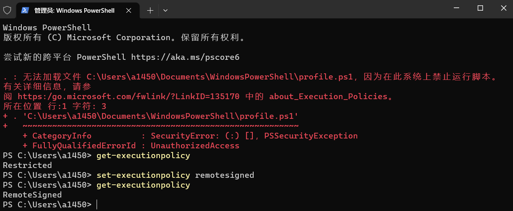
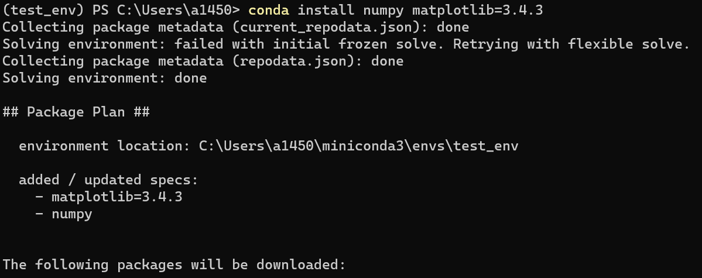
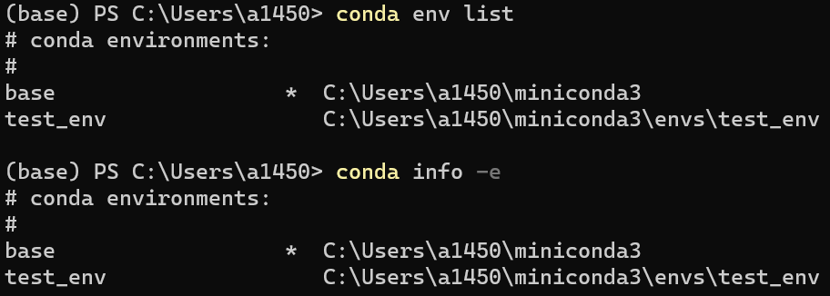
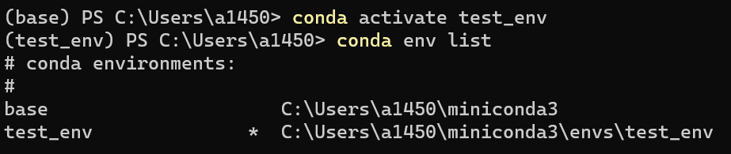

Windows 下使用 Conda 管理 Python 环境
前言
按照固有思维，Windows 下应该使用PowerShell或CMD来执行Conda相关命令来管理Python环境。
-
注意：在使用
PowerShell前应先检查Anaconda3/Scripts/已经添加到了系统环境变量下，然后执行conda init powershell否则会出现无法激活切换
conda环境，参考
-
确保可运行

可能出现如上情况，该情况出现的原因是 Windows 上
.ps1默认执行策略为Restricted，用管理器权限运行PowerShell执行如下命令：set-executionpolicy remotesigned执行后，执行策略修改为为
remotesigned
源配置
生成 .condarc 文件
各系统都可以通过修改用户目录下的 .condarc 文件来更改镜像源。Windows 用户无法直接创建名为 .condarc 的文件，可先执行如下命令：
conda config --set show_channel_urls yes生成该文件之后再修改。
修改 .condarc 文件
channels:
- defaults
show_channel_urls: true
default_channels:
- https://mirrors.bfsu.edu.cn/anaconda/pkgs/main
- https://mirrors.bfsu.edu.cn/anaconda/pkgs/r
- https://mirrors.bfsu.edu.cn/anaconda/pkgs/msys2
custom_channels:
conda-forge: https://mirrors.bfsu.edu.cn/anaconda/cloud
msys2: https://mirrors.bfsu.edu.cn/anaconda/cloud
bioconda: https://mirrors.bfsu.edu.cn/anaconda/cloud
menpo: https://mirrors.bfsu.edu.cn/anaconda/cloud
pytorch: https://mirrors.bfsu.edu.cn/anaconda/cloud
pytorch-lts: https://mirrors.bfsu.edu.cn/anaconda/cloud
simpleitk: https://mirrors.bfsu.edu.cn/anaconda/cloud即可添加 Anaconda Python 免费仓库。
运行 conda clean -i 清除索引缓存，保证用的是镜像站提供的索引。
Conda常用命令
查看已安装的库
conda list安装指定库
conda install xxx-
示例：安装
numpy和指定3.4.3版本的matplotlib,conda会自动从远程搜索相关信息和依赖项目conda install numpy matplotlib=3.4.3
删除指定库
conda uninstall xxx搜索库
conda search xxx检查更新当前conda
conda update conda检查并更新所有内容
conda update --allConda虚拟环境管理
查看已有虚拟环境
conda env list
# 或
conda info -e
创建新环境
conda create -n your_env_name python=x.x-
示例
conda create -n test_env python=3.7
激活（切换）环境
conda activate your_env_name-
示例
conda activate test_env
关闭虚拟环境（回主环境）
conda deactivate your_env_name-
示例
conda deactivate test_env
删除虚拟环境
conda remove -n your_env_name --all-
示例
conda remove -n test_env --all
Conda环境复制（备份）与迁移
复制（本地备份）
conda create --name myclone --clone myenvmyclone 复制（备份）产生的新环境的名称
myenv 想复制的现有环境的名称
迁移（不同电脑）
在新电脑上安装旧电脑的环境步骤如下
-
切换到想要迁移的环境
conda activate env_name -
导出为
.yaml文件conda env export > environment.yaml会在当前命令执行目录下生成一个
environment.yaml文件， -
将其复制到新电脑上后执行导入环境操作
conda env create -f environment.yaml注意：若导出base环境，则在目标机上会提示已存在（而且base环境无法删除）
若希望迁移到base环境应该使用如下命令
conda env update -n base --file environment.yaml